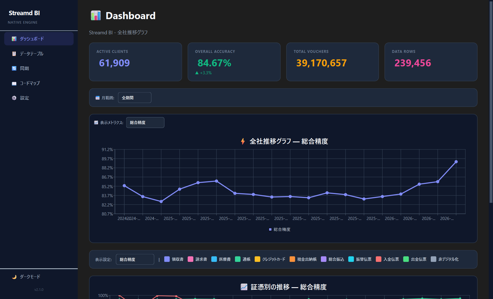
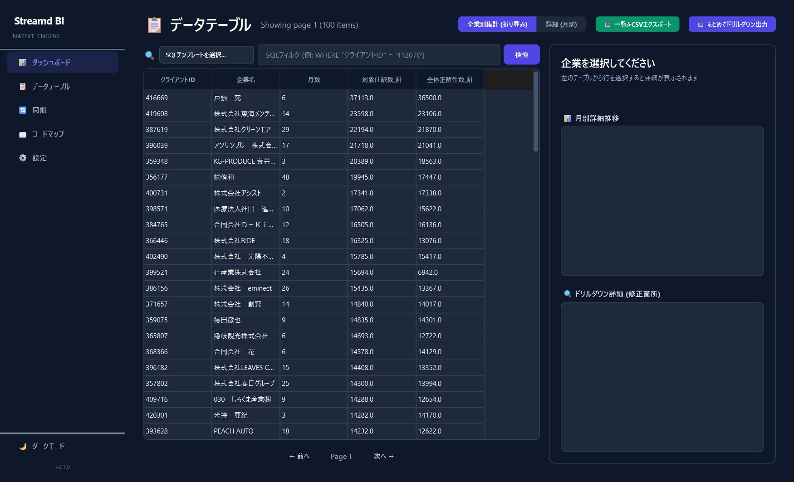
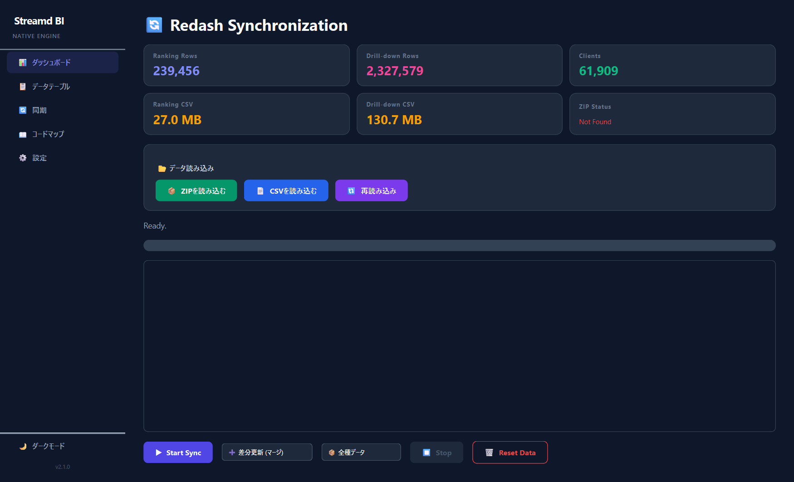
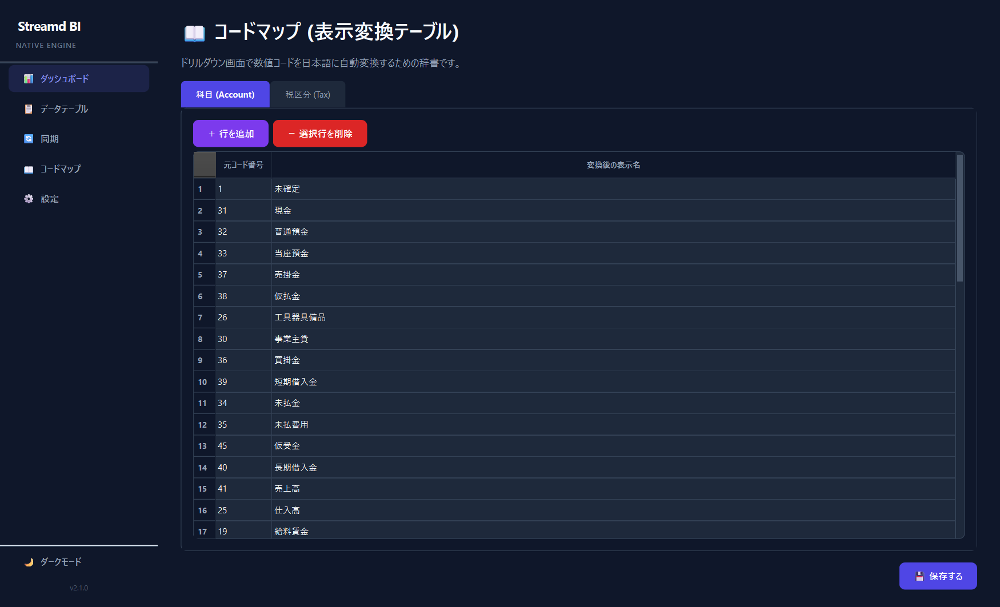
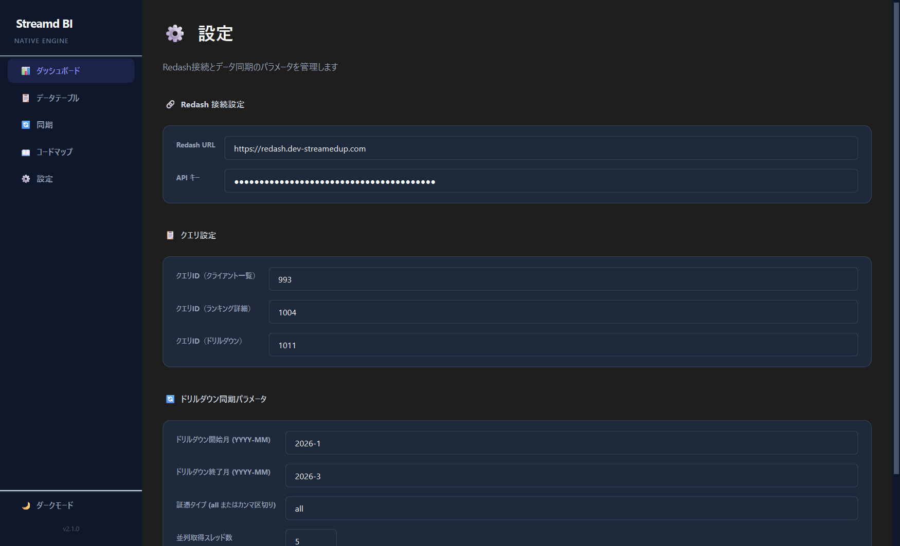

Streamd BI
Native Engine
DuckDBの圧倒的なパワーを、直感的なデスクトップ体験へ。ビジネスの意思決定を「爆速」にする次世代BIツール。
プロダクト概要
Streamd BI Native Engineは、Redash上の膨大なデータをローカル環境で高速に分析・可視化するためのプロフェッショナル向けツールです。 インメモリ処理の最適化により、数百万件のデータもストレスなく、自由自在に操ることができます。
爆速レスポンス
DuckDBによるインメモリ処理。フィルタリングや集計は常に「ミリ秒」単位で完了し、思考を妨げません。
流麗な可視化
ランキングをインタラクティブに操作。ドリルダウンで細部まで解明。
柔軟なデータ連携
Redash APIとのシームレスな同期基盤。
クイックスタート
アプリを起動したら、まずはデータを読み込みましょう。
- データの同期: 同期タブを開き、Start SyncをクリックしてRedashから最新データを取得します。（APIキーの設定が必要です）
- ZIP/CSVの読み込み: すでに手元にデータがある場合は、同期タブ内の「データ読み込み」セクションからZIPまたはCSVを選択してロードできます。
- 分析開始: サイドバーからダッシュボードまたはランキングを選択し、分析を開始します。
ダッシュボード
全体のトレンドを俯瞰するための画面です。

インタラクティブ・チャート
- ポイントクリック: グラフ上のデータポイントをクリックすると、その期間・条件でフィルタリングされた「詳細ランキング」画面へ自動で遷移します。
- 凡例の切り替え: 凡例をクリックすることで、特定のシリーズ（証憑タイプなど）の表示/非表示を切り替えられます。
ランキングと詳細分析
個別のクライアントや取引のデータを詳細に確認できる画面です。

高度なフィルタリング
検索バーには、SQLの WHERE 句のような条件式を直接入力できます。
処理月 = '2024-03': 特定の月のデータを表示企業名 LIKE '%株式会社%': 部分一致検索証憑タイプ = '領収書' AND 枚数 > 100: 複合条件
CSVエクスポート
分析結果を外部ツールで利用するために、CSV形式で出力できます。
1. 表示中の一覧をエクスポート
「ランキング」画面でフィルタリングされた現在のテーブルをそのまま保存します。
- 手順: 一覧をCSVエクスポート ボタンをクリックします。
- 用途: 特定の企業の月次レポート作成や、条件に合致する企業リストの作成。
2. まとめてドリルダウン出力 (一括書換抽出)
全クライアントの修正履歴（ドリルダウンデータ）を、特定の条件で横断的に抽出します。
- ダイアログ設定: 対象月、証憑タイプ、エラー項目で絞り込みが可能です。
- コードマップ反映: 「コードを日本語に翻訳して出力する」をチェックすると、数値コードが名称（例: 31 → 現金）に変換された状態で出力されます。
データ同期 (Redash)
サーバー上の最新データをローカルに取り込みます。

- 差分更新 (マージ): 既存のデータは残したまま、新しいデータだけを追記します。
- 全件再取得 (フルリセット): 全てのローカルデータを削除し、クエリの結果をそのまま保存します。
コードマップ設定
システム内部の数値コードを、人間が理解しやすい日本語名称に変換するための辞書設定です。

変換の仕組み
ドリルダウン詳細画面やCSV出力時に、設定された変換ルールが自動的に適用されます。
- 科目 (Account): 「31」を「現金」、「41」を「売上高」などに変換します。
- 税区分 (Tax): 「12」を「課税仕入 10%」などに変換します。
新しいコードが登場した場合は、＋ 行を追加 から対応表を更新し、💾 保存する をクリックしてください。
設定とテーマ
サイドバーの下部にある太陽/月アイコンから、ダークテーマとライトテーマを切り替えることができます。

APIキーや接続先URLは、設定画面から変更可能です。
FAQ
Q. データが表示されません
同期タブで「再読み込み」を試すか、streamdbi_ranking_data_master.csv が存在するファイルを確認してください。
Q. 同期時にエラーが出る
インターネット接続と、設定画面のAPIキーが正しいかを確認してください。RedashのクエリIDが変更されていないかも重要です。